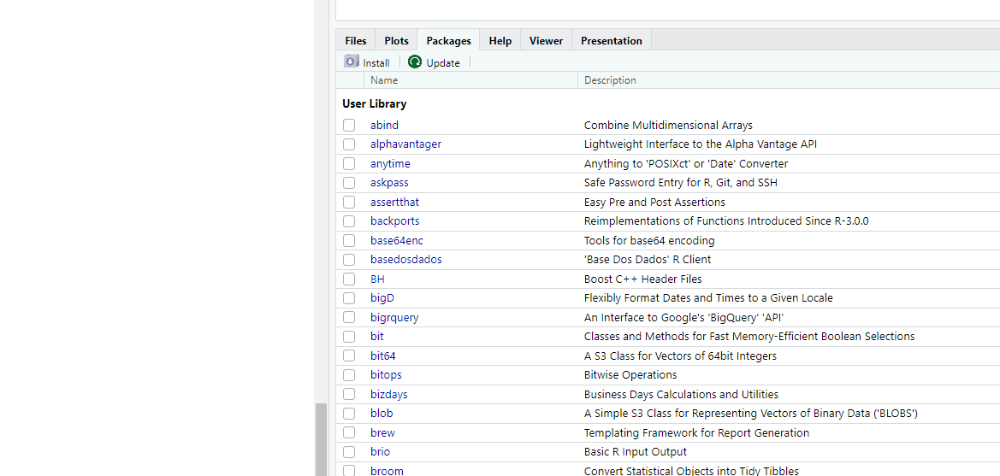
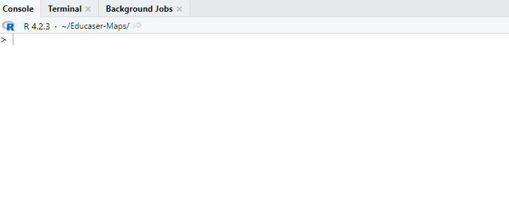
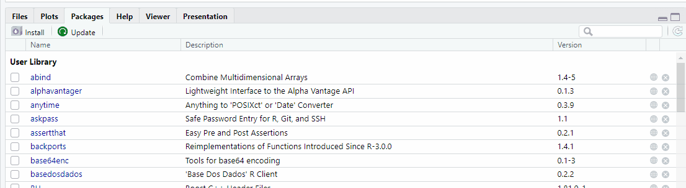
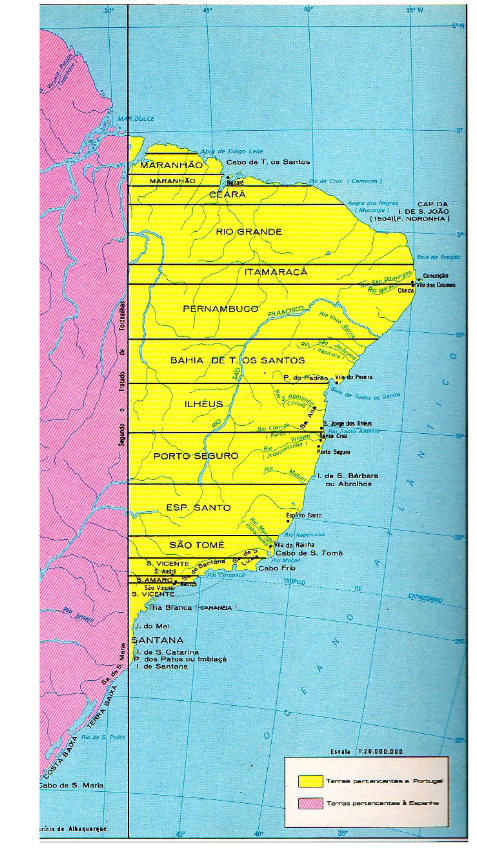
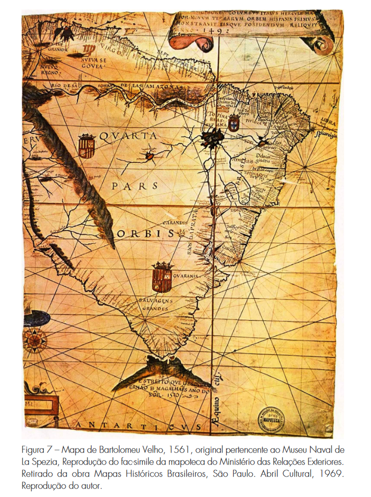
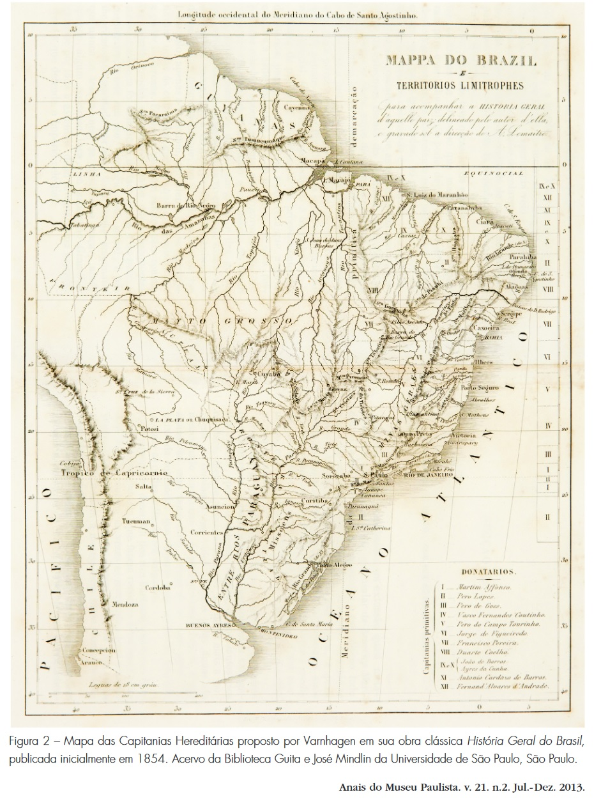
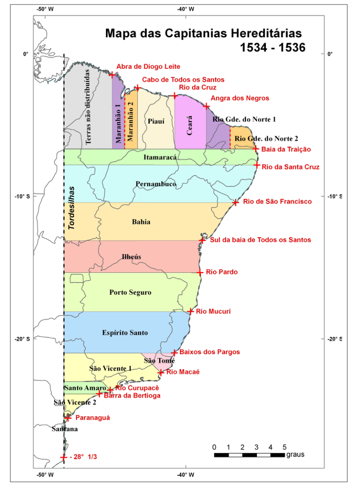

Apresentação Leaflet EducaSER
Marcus Antonio Cardoso Ramalho
Marcus Ramalho
10 anos pra aprender a programar 🤦♂️
Matlab/Fortran/Pascal/VBA/AutoLISP(LISP)/PHP/HTML/
M(power query)/TypeScript/Python/R❤️e SQLHistoria
Mapas
Nossos objetivos hoje
Aprender ou reaprender um pouco sobre história criando mapas
Aprender as principais funções e métodos do pacotes leaflet
Criar um projeto Quarto
Criar um mapa interativo mostrando um pedaço da história do Brasil
Publicar o projeto com a ajuda do github pages
Um pouco de história
Antes de 1500
Pindorama para os Tupis ou terra das palmeiras
…1500
Isso não tava nos planos…
Terra a vista!!
Paro Paro Paro

Vamos falar de :

Introdução ao leaflet
O Leaflet é uma biblioteca JavaScript de código aberto para criação de mapas interativos em páginas da web.
É leve, flexível e fácil de usar.
Suporta vários provedores de mapas, incluindo OpenStreetMap, Mapbox e Google Maps.
Recursos do Leaflet
Exibe mapas interativos em páginas da web.
Adiciona camadas de informações, como marcadores, polígonos e linhas.
Permite interações com os mapas, como zoom e movimento.
Oferece suporte a eventos de interação, como clique em marcadores.
Suporta personalização da aparência dos mapas e camadas.
leaflet no R
O CRAM possui alguns pacotes que permitem usar os recursos do leaflet:
Pacote leaflet - Cria os mapas com dados geoespaciais (latitude e longitude)
Pacote htmlwidgets - viabiliza a renderização do leaflet no R
leaflet.extras e leaflet.extras2
leafpop para adicionar imagens, tabelas e gráficos aos mapas
Outros…
Instalação
Vamos usar os pacotes disponíveis no CRAN
No RStudio: Digite no console install.packages(“leaflet”)
ou
Carregamento


Nosso primeiro mapa
No leaflet, assim como no ggplot2 trabalhamos em camadas, vamos criar a primeira e atribuir a um objeto chamado mapa
Marcadores
Podemos adicionar marcadores e legendas ao nosso mapa, com a função setView podemos centralizar nossa visualização.
Criando ícones
gif <- "https://media.tenor.com/n6w94xzL0DYAAAAM/don-ramon-el-chavo-del8.gif"
#criando o objeto do tipo leaflet icon
madruga <- makeIcon(iconUrl = gif,
iconWidth = 125,
iconHeight = 100)
class(madruga)[1] "leaflet_icon"#coordenadas de acapulco
acapulco <- c(16.823475, -99.855119)
mapa %>%
addMarkers(lat = acapulco[1], lng = acapulco[2],
icon = madruga) %>% #agora basta chamar a variável icone dentro de addMarkers
setView(lat = acapulco[1], lng = acapulco[2], zoom = 15) Criando Pop Ups
Note
A função o Marker recebe os elementos interativos
Monuriki <- c(-17.610176, 177.033988)
gif_2 <- "https://media.tenor.com/XnwgbA0jDYsAAAAC/fire-flame.gif"
mapa_2 <- mapa %>%
addMarkers(lat = Monuriki[1], lng = Monuriki[2],
label = "Cadê o wilson?!",
popup=leafpop::popupImage(gif_2,src="remote")) %>%
setView(lat = Monuriki[1], lng = Monuriki[2], zoom = 15)
mapa_2Unindo pontos
Usando a função addPolylines() podemos unir dois ou mais pontos
gif_3 <- "https://media.tenor.com/Zujt8vI4epgAAAAi/nelson-thatsportsspice.gif"
wilson <- makeIcon(iconUrl = gif_3,
iconWidth = 30,
iconHeight = 40)
lat <- c(-17.610176,-17.610476)
lon <- c(177.033988, 177.023988)
linha <- data.frame(lat,lon) #cria um data frame com duas coordenadas
mapa_2 %>%
addPolylines(lat=linha$lat,lng=linha$lon) %>% #passa as coordenadas do df para a função
addMovingMarker(lat=linha$lat, #adiciona umanimação ao segundo marcador
lng=linha$lon,
icon = wilson,
movingOptions = movingMarkerOptions(autostart = TRUE),
duration = 10000)Fechando os pontos
Com a função addPolygons() conseguimos criar poligonos fechados
Outros providers
https://leaflet-extras.github.io/leaflet-providers/preview/
Aplicando outros providers…
Camadas e grupos
Podemos adicionar ainda mais camadas usando a função addLayersControl() e controlar criando grupos
leaflet() %>%
addProviderTiles("Stamen.TerrainBackground", group = "Terreno") %>%
addProviderTiles("Stamen.TerrainLabels", group = "Legenda") %>%
addCircleMarkers(lng = 0, lat = 0, group = "Marcador") %>%
addLayersControl(
baseGroups = c("Terreno"),#grupo primário
overlayGroups = c("Marcador", "Legenda")
) %>% #grupos secundarios. Pode marcar mais de 1.
setView(lat = 0, lng = 0, zoom = 2) %>%
hideGroup("Legenda") #esconde um ou mais grupos da visualizaçãoTá, mas e na prática?
Um exemplo com dados do inicio da pandemia:
disresp <-as.data.frame(read.csv("https://raw.githubusercontent.com/nextmarte/baserespiradoresmbauff/main/disresp.csv"))
#criando uma tabela com os estados, a quantidade de respiradores enviados e as coordenadas geograficas
estados<-disresp %>%#tabela base
select(DESTINO,VALOR) %>%
#transforma a coluna valor em numérica
mutate(VALOR = parse_number(str_remove_all(VALOR, "[R$,]"))) %>%
group_by(DESTINO) %>%
#quantidade total de respiradores por estado
dplyr::summarize(Valor_total=sum(VALOR))
geoestados<-unique(estados$DESTINO) %>%
#gerando as coordenadas geograficas para cada estado gerando um df
plyr::ldply( function(x) RgoogleMaps::getGeoCode(x)) %>%
#data frame com as coordendas, destinos e quantidades
data.frame(estados)
map_resp <- leaflet(geoestados) %>%
addTiles(group = "base") %>%
addProviderTiles("Esri.DeLorme", group = "Terreno") %>%
addMarkers(clusterOptions =
markerClusterOptions(removeOutsideVisibleBounds = TRUE),
popup = ~ as.character(Valor_total),
group = "cluster") %>%
addCircleMarkers(
#aqui o reescale ajusta os valores da variável para não extrapolar a visualização
radius = ~ scales::rescale(Valor_total, c(1, 25)),
group = "circulos",
label = ~ as.character(DESTINO)) %>%
addLayersControl(
baseGroups = c("OSM", "Terreno"),
overlayGroups = c("cluster", "circulos")) %>%
hideGroup("OSM")Ta pronto…
Voltando ao Brasil com as capitanias hereditárias
Acho que todo mundo já viu um desses
Bartolomeu Velho
Mapa mais antigo disponível mostrando as capitanias hereditarias
Adolfo de Varnhagen


Jorge Pimentel Cintra
Reconstruindo o mapa das Capitanias Hereditárias

Vamos tentar reproduzir alguns pontos deste mapa com leaflet.

Bibliografia
Brazil | History, Map, Culture, Population, & Facts | Britannica. (2023, maio 25). https://www.britannica.com/biography/Pedro-Alvares-Cabral
Cintra, J. P. (2013). Reconstruindo o mapa das capitanias hereditárias. Anais do Museu Paulista: História e Cultura Material, 21(2), 11–45. https://doi.org/10.1590/S0101-47142013000200002
Leaflet Provider Demo. ([s.d.]). Recuperado 26 de maio de 2023, de https://leaflet-extras.github.io/leaflet-providers/preview/
Leaflet—An open-source JavaScript library for interactive maps. ([s.d.]). Recuperado 26 de maio de 2023, de https://leafletjs.com/
leaflet-extras/leaflet-providers: An extension to Leaflet that contains configurations for various free tile providers. ([s.d.]). Recuperado 26 de maio de 2023, de https://github.com/leaflet-extras/leaflet-providers
Loecher, M. (2020). RgoogleMaps: Overlays on Static Maps (1.4.5.3). https://cran.r-project.org/web/packages/RgoogleMaps/index.html
Sebastian, G., Basa, R. R., & Hanson, J. O. (2023). leaflet.extras2: Extra Functionality for “leaflet” Package (1.2.1). https://cran.r-project.org/web/packages/leaflet.extras2/index.html
Vasco da Gama | Biography, Achievements, Route, Map, Significance, & Facts | Britannica. (2023, maio 16). https://www.britannica.com/biography/Vasco-da-Gama
Wickham, H., & RStudio. (2023). tidyverse: Easily Install and Load the “Tidyverse” (2.0.0). https://cran.r-project.org/web/packages/tidyverse/index.html
Obrigado!!
marcusantonio@id.uff.br
nextmarcus 
nextmarte 

Marcus Ramalho - PPGAd-UFF